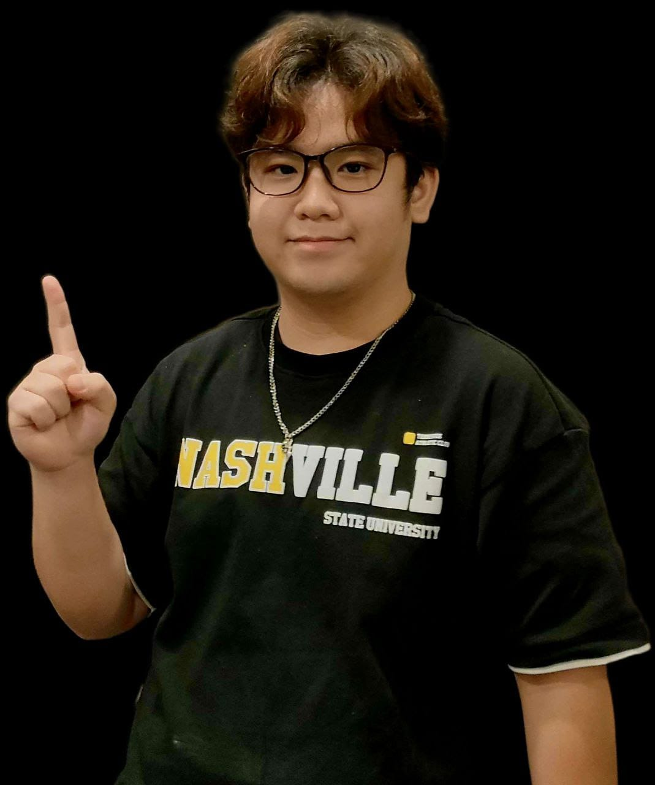

Digital Design & Development Student
I build clean, user-friendly digital experiences combining creative design with code.

I’m a Polytechnic student specializing in Digital Design and Development. I enjoy crafting intuitive interfaces in Figma and implementing responsive layouts with HTML, CSS, and JavaScript.
I also have experience in Unity game development and version control using GitHub. Outside of tech, I’m a gamer and part-time DJ, which helps sharpen my creativity and teamwork skills.
I’m looking for opportunities to grow as a developer while contributing to meaningful projects.
Gamer. Part-time DJ. Creative thinker. I enjoy blending music, design, and technology to build engaging digital experiences.